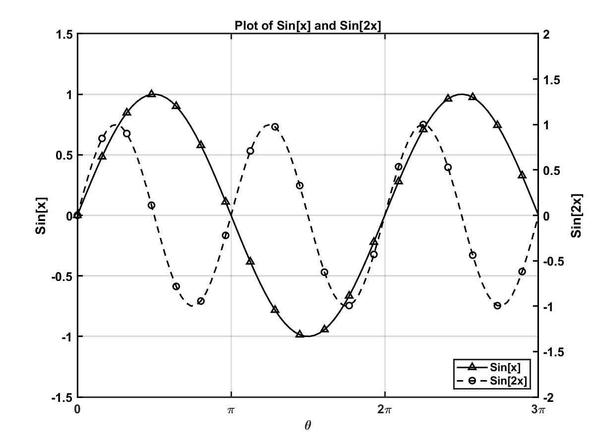
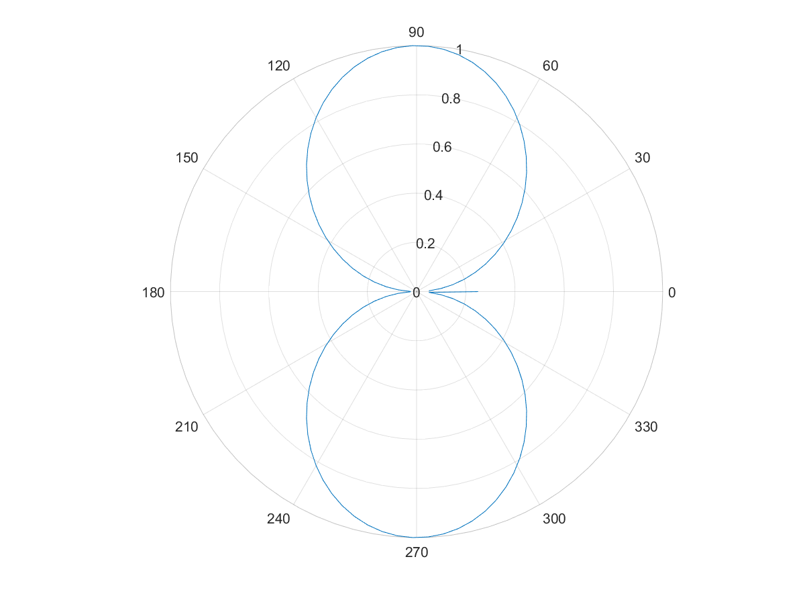
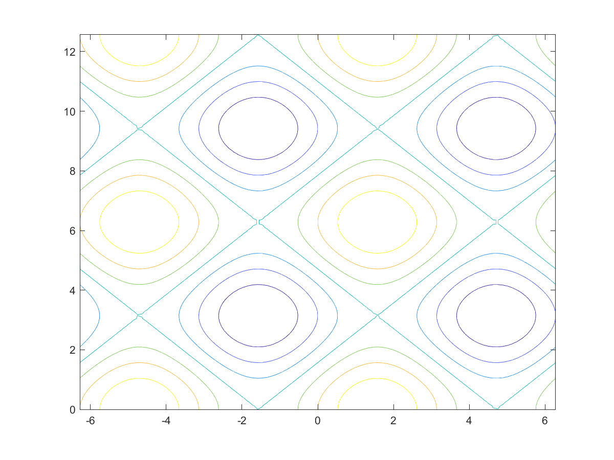
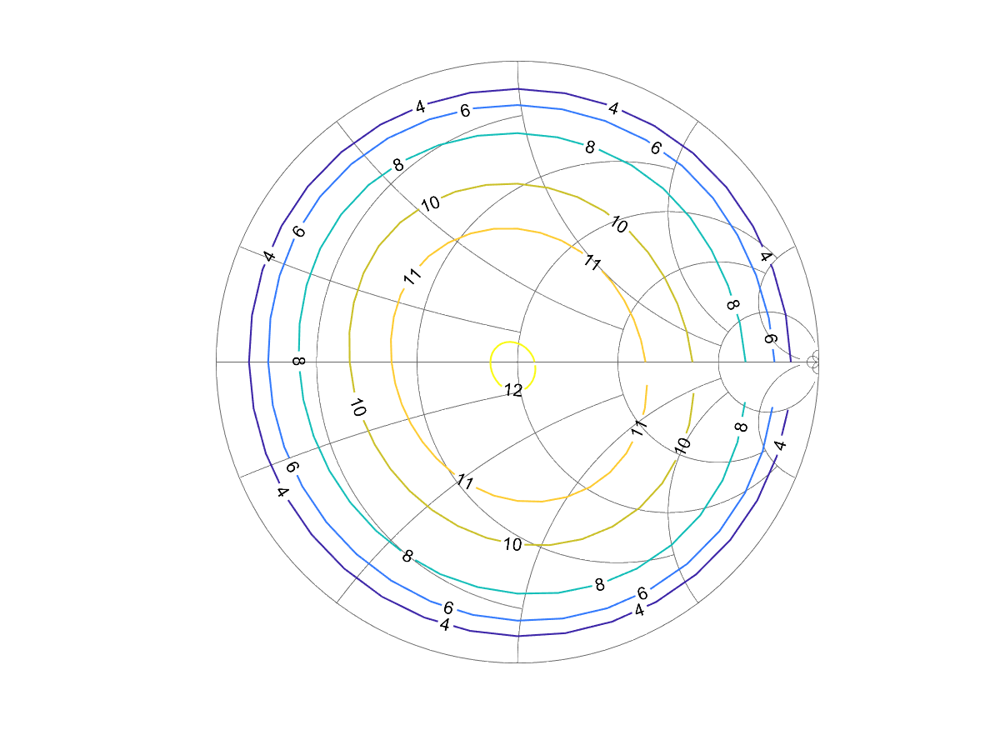
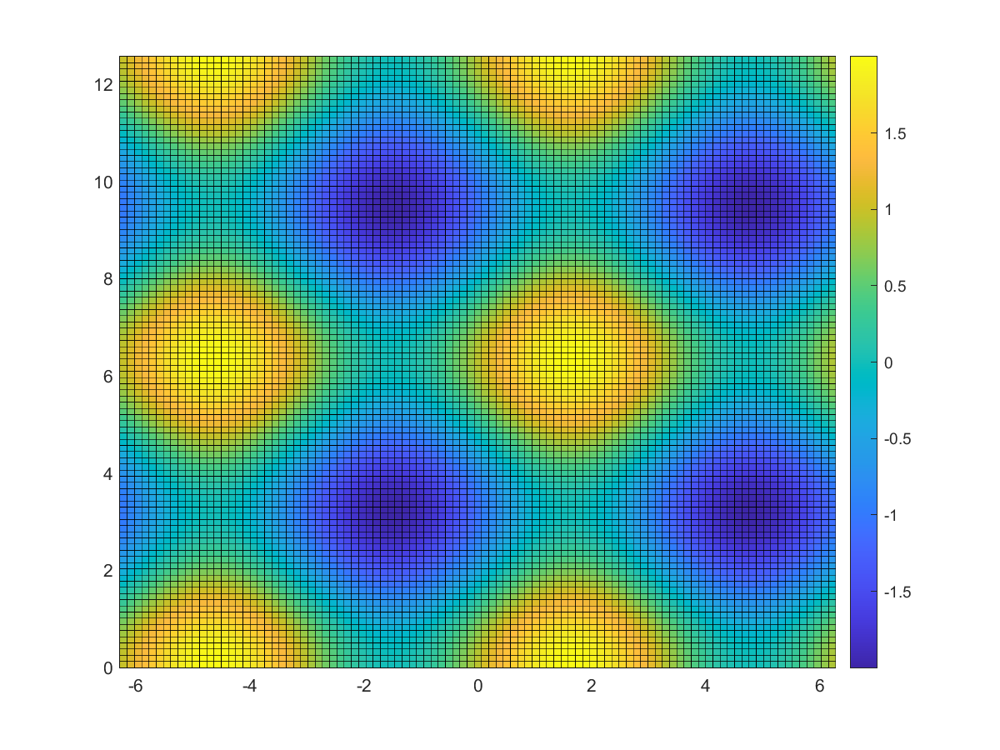
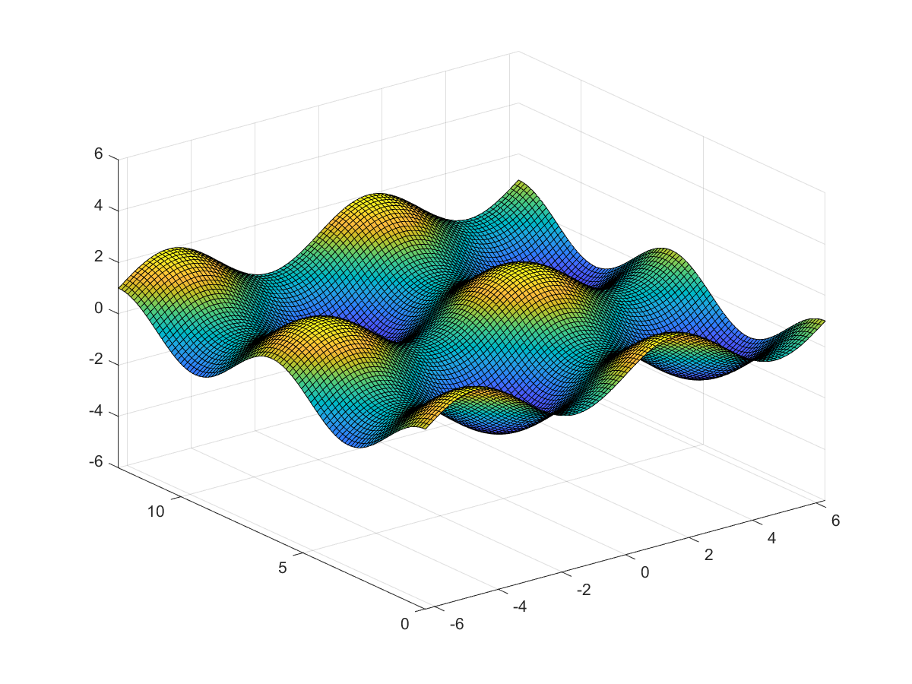

使用Matlab编程
本文介绍了Matlab的基本语法及绘图常用指令。
基本语法
Matlab的变量类型有
- 数值
- 向量/矩阵
- 结构体
- 元胞数组
- 字符和字符串
- 函数句柄
需要查看变量类型时，可以使用class(variable)
数值
Matlab的数值类型包括
- double（默认）
- single
- int8/uint8
- int16/uint16
- int32/uint32
- int64/uint64
Matlab支持复数运算，可以使用1+2i或者1+2j的形式表示。当运算结果为无穷时，表示为Inf，例如2/0;当运算结果不存在时，表示为NaN，例如 Inf-Inf。常见的运算有
1 | floor(pi) % 向上取整 |
向量/矩阵
1 | size(A) % 获取矩阵形状 |
结构体
结构体数组是使用名为字段的数据容器将相关数据组合在一起的数据类型。每个字段都可以包含任意类型的数据。
1 | patient.name = 'John Doe'; |
元胞数组
元胞数组是一种包含名为元胞的索引数据容器的数据类型，其中的每个元胞都可以包含任意类型的数据。
1 | C = cell(2,2) % 创建元胞数组 |
字符和字符串
Matlab的字符串可以用单引号或者双引号表示，常用函数有
1 | str = 'Hello World!' % 创建一个字符串数组 |
正则表达式
1 | str = 'The regexp function helps you relax.'; |
函数句柄
1 | % 创建函数句柄 |
常用操作
CMD输入和输出
1 | disp('Hello World!') % 输出字符串 |
输入输出
1 | % 导入数据，DELIM是分隔符，NHEADERLINES是头部行数 |
绘图
Matlab的Figure的子对象包括
- Annotation
- Axes
- Illustration
Matlab中的Axes对象同时包括x轴、y轴标注、标记、曲线等，其子对象有
- Line
保存图片
1 | % 保存图片 |
线性图表
基本绘制
1 | % 绘制2D图表 |
双Y轴绘制
1 | % 绘制双Y轴2D图表 |
标注及范围设置
1 | % 设置坐标轴和标题名称 |
属性设置
1 | % 设置线条类型 |
综合示例

1 | f = figure(1); % obtain a handle to the Figure |
极坐标绘图

1 | x = linspace(0, 2*pi); |
等高线图

1 | x = linspace(-2*pi,2*pi); |
史密斯圆等高线图

1 | data = importdata(fileName, ',', 5); |
伪彩色图

1 | x = linspace(-2*pi,2*pi); |
曲面图

1 | x = linspace(-2*pi,2*pi); |
参考
Related Posts
- Post link: https://triblemany.github.io/archives/3951eef4/programing-with-matlab.html
- Copyright Notice: All articles in this blog are licensed under BY-NC-SA unless stating additionally.